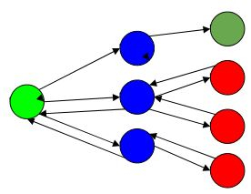

Backtracking is a technique based on algorithm to solve problem. It uses recursive calling to find the solution by building a solution step by step increasing values with time. It removes the solutions that doesn't give rise to the solution of the problem based on the constraints given to solve the problem
In backtracking problem, the algorithm tries to find a sequence path to the solution which has some small checkpoints from where the problem can backtrack if no feasible solution is found for the problem.
Example:-
Here,
Green is the start point, blue is the intermediate point, red are points with no feasible solution, dark green is end solution.
Here, when the algorithm propagates to an end to check if it is a solution or not, if it is then returns the solution otherwise backtracks to the point one step behind it to find track to the next point to find solution.